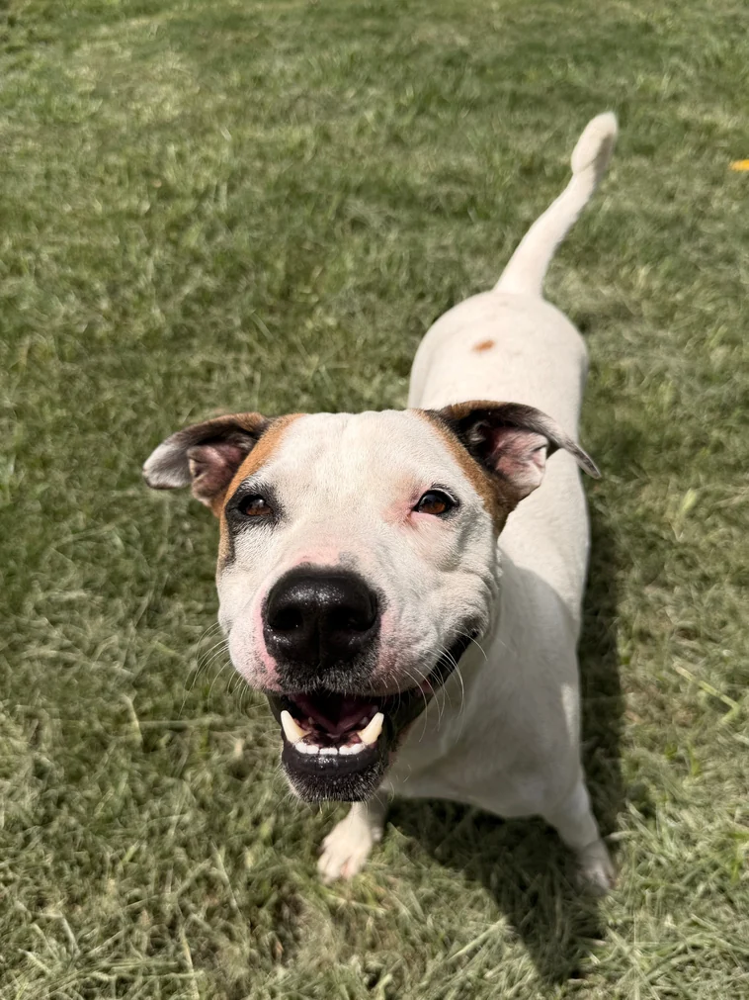
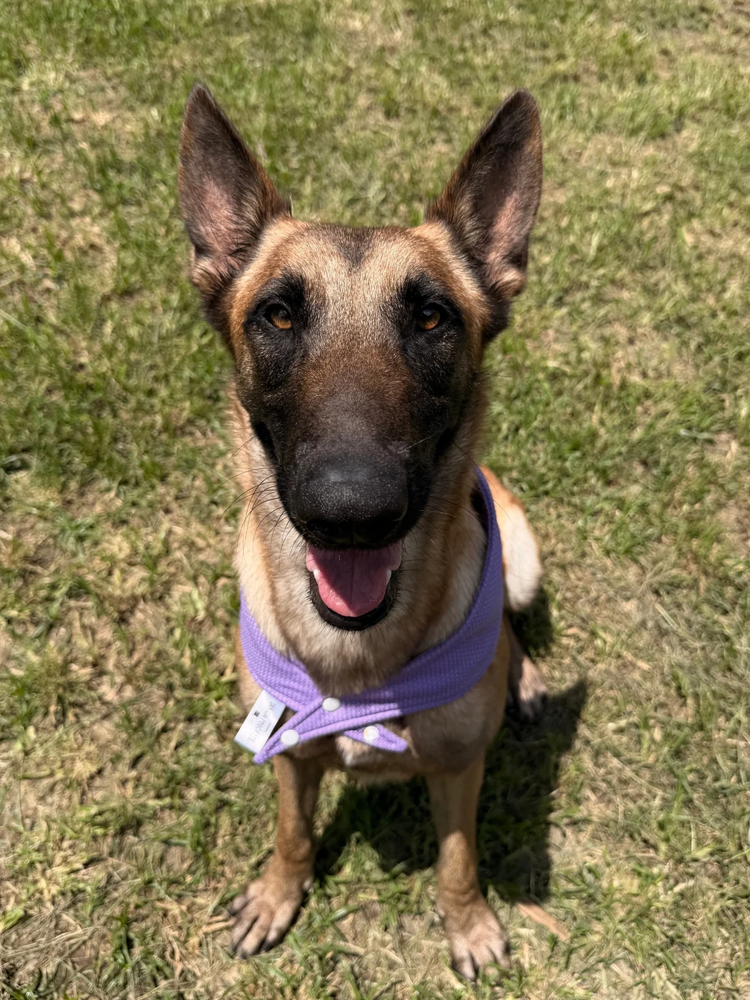

Browse profiles
Explore the dogs and save the ones you would like to meet.
City of Galena Park Kennel
Meet the dogs currently looking for safe, loving homes. Browse their profiles, save your favorites, and contact the kennel to schedule a meet-and-greet.

Local careDogs cared for by your city kennel
Meet firstSpend time together before deciding
Clear next stepsSimple, friendly adoption guidance
Available now
Every dog has a different story and personality. Search by name or use the filters to narrow the list.
Try a different name or remove a filter.

Made for second chancesWhy adopt locally
Adopting through your local kennel gives a dog a fresh start and makes room for the next animal who needs care. The right match starts with a conversation and a little time together.
See how adoption works →Simple process
The kennel team can confirm current availability, answer questions, and guide you through the official city process.
Explore the dogs and save the ones you would like to meet.
Contact the kennel to confirm availability and arrange a meet-and-greet.
Follow the city’s adoption requirements and prepare for the trip home.
Come say hello
Contact the City of Galena Park Kennel before visiting to confirm hours, availability, and any documents or fees required.
Adoption inquiry
Send the Humane Department your contact information and questions. A staff member can confirm current availability and explain the next steps.